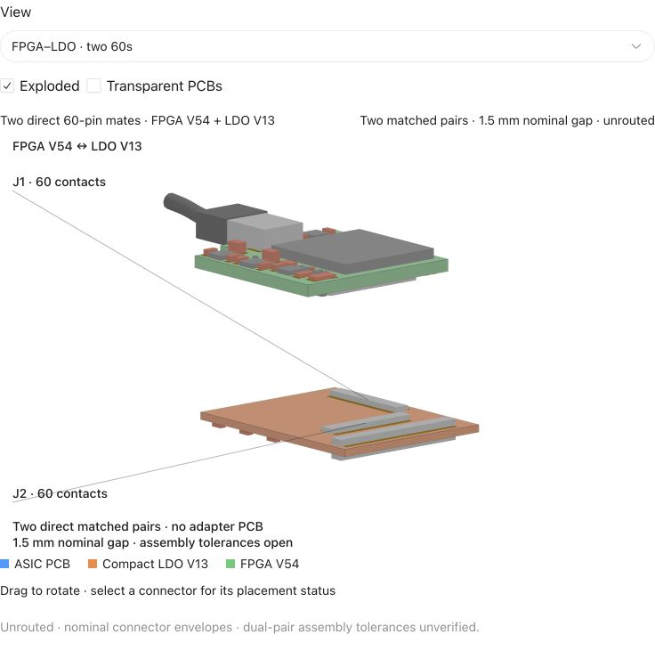

LDO carrier board
Ready for manufacturing. JLCPCB global sourcing comes first.
XEM to FPGA interposer
Schematic and routing complete. Component sourcing started.
Separate FPGA and LDO boards
Full assembly overview and a closer look at the FPGA board.
FPGA board
Updated oscillators, configuration and schematic drawing.
LDO carrier board progress
Part namesQty × unit priceLine priceSourcing status
Qty × unit price
Line price
Qty × unit price
Line price
Qty × unit price
Line price
Qty × unit price
Line price
Qty × unit price
Line price
JLCPCB global sourcing · 20 October 2026 · prices and Purchasing status from the saved screenshot.

V42 carrier schematic. Zoom for power, programming and ASIC connections.
Ready for manufacturing. We are globally sourcing the components through JLCPCB first.
XEM to FPGA interposer schematic
- Power12 V to XEM. Protected 3.3 V to the remote FPGA.
- Serial linkThree data pairs to XEM and one command pair back.
- ProgrammingBRK USB JTAG. Edge switch selects XEM or remote FPGA.
- SourcingStarted component sourcing ahead of manufacturing this week.

V23 one-page schematic with the updated PCM12 selector switch.
Review with Gerald and Zitong. Manufacturing target: this week.
Separate FPGA and LDO boards

Two direct 60-contact pairs and a nominal 1.5 mm board-surface gap.

LDO V13 basic schematic. Use the view selector for the detailed circuit.
All boards in the overview. Use FPGA close-up or select a component to zoom in.
Interposer schematic, layout and 3D
V23 one-page schematic with PCM12 selector switch
V23: updated PCM12 selector switch, schematic and routing. Review with Gerald and Zitong.
FPGA schematic updates
- PowerBank 0, JTAG and flash share 1.8 V. ASIC I/O banks stay at 1.5 V.
- ConfigurationSPIx1 boot path with separate PROGRAM_B and INIT_B holds.
- Clock125 MHz GTP reference plus a separate 25 MHz fabric clock.
- DrawingSupport parts connect directly to their local circuits on one page.

V60 one-page schematic, retaining the oscillator, configuration and directly wired support circuits.